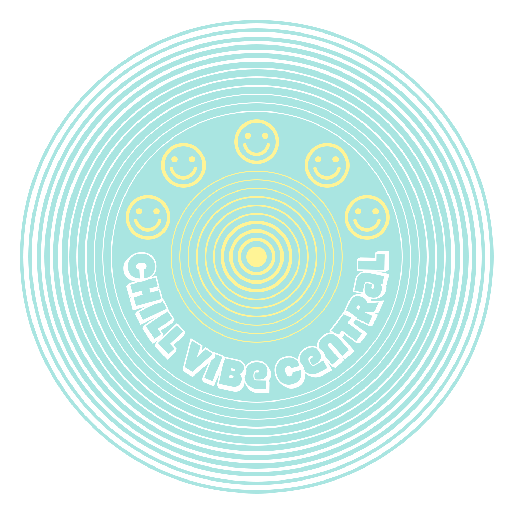
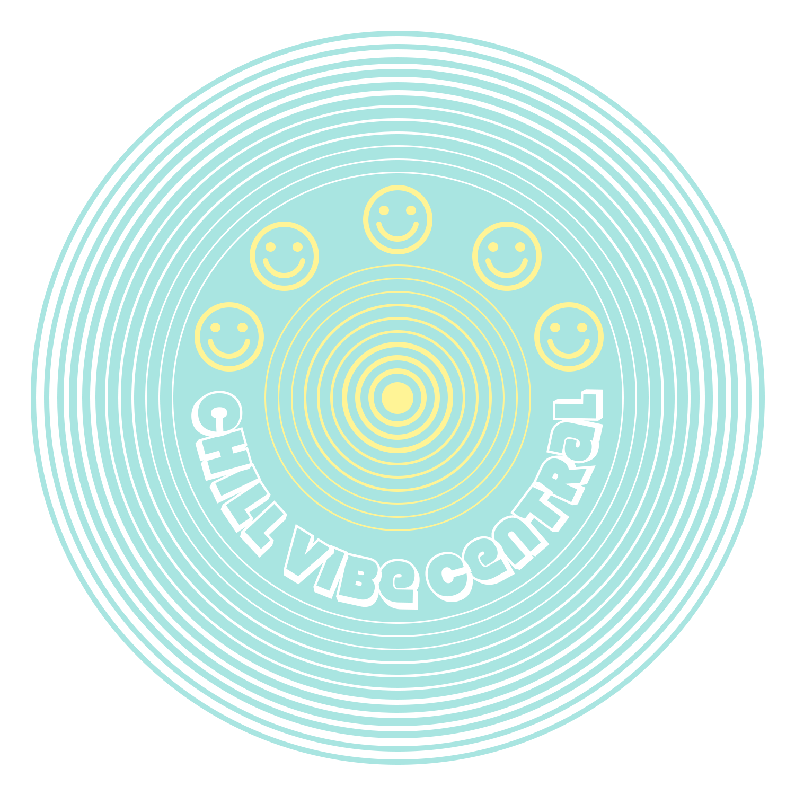
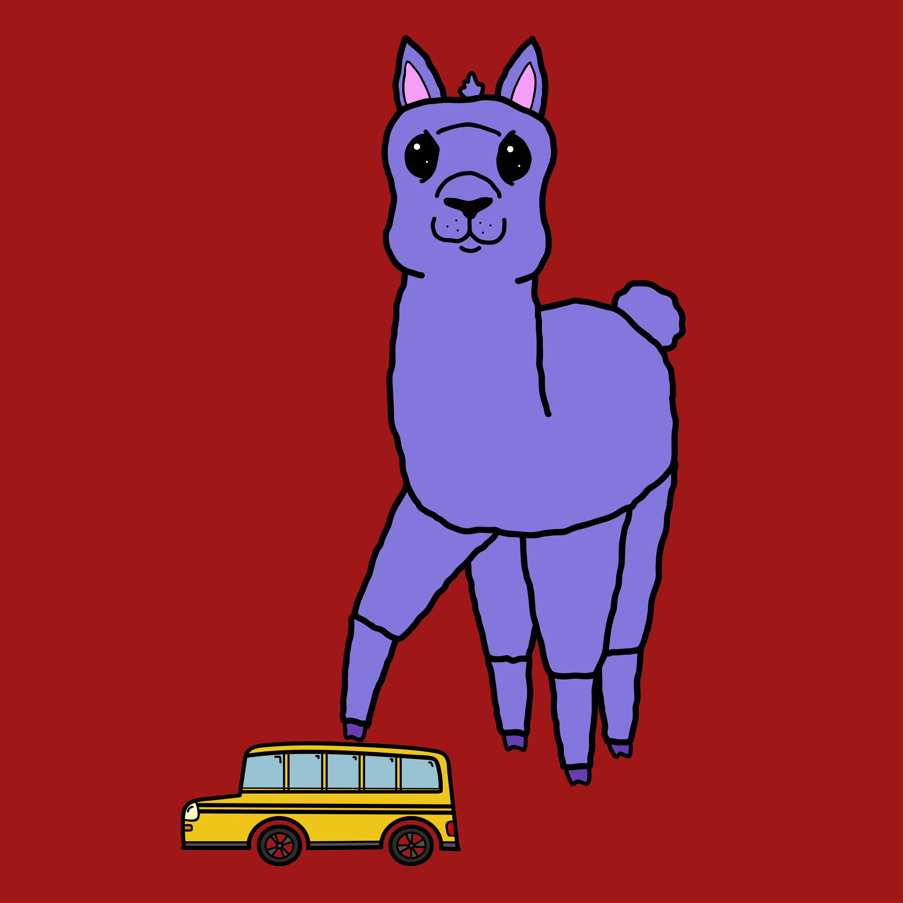
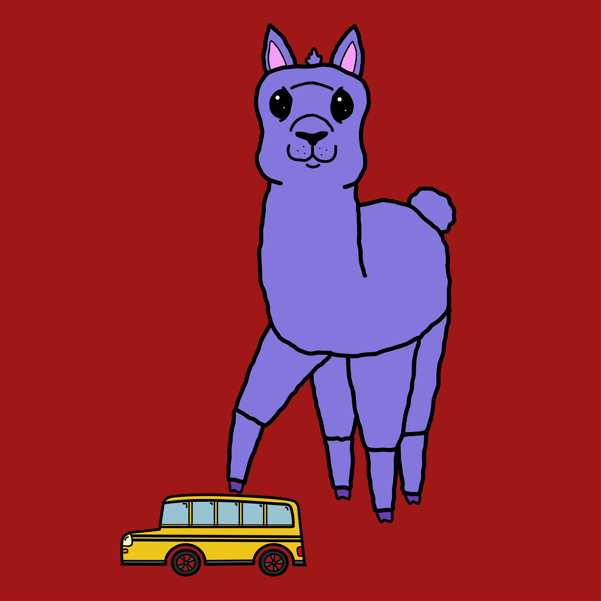

graphic design

Here is a logo I created of my initials as part of a course assignment.
1 / 12

Visual design guide created by a group of students, including myself, as part of the design phase of an app we developed called onme for our web design workshop course. The guide consists of various versions of the onme logo that I designed with the help of my project team.
3 / 13


Sample graphics that I created from standard product shots from TRILL Marketplace. These designs are not affiliated with TRILL Marketplace but created for personal, educative purposes.
4 / 13

Here is a simple logo of initials created for a recent UCF graduate entering the workforce, designed for business cards, email signatures, and résumé for a personalized touch.
5 / 13

Here is a logo requested by a client who wanted a fun-looking and colorful duck that would look good on a hat or t-shirt to give to their family and friends.
6 / 13


Front and back of a postcard that I designed for Laz Parking's Homestead Station parking garage.
7 / 13
 

Badge-type logos designed explicitly for printing onto shirts and hoodies.
8 / 13

A UCF student requested a wallpaper design that'd remind them to do their homework when they looked at their phone.
9 / 13

Informational graphic that I designed for The Golden Law Group for use in a presentation.
10 / 13

 

I created a character called Albert Paca and started a small collection just for fun.
11 / 13
I created this logo as part of an app prototype project in my user-centered design course.
12 / 13

I designed this logo to represent an imaginary social media platform created for my social platforms course.